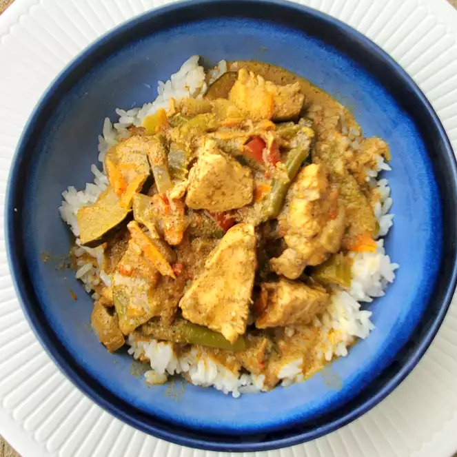

Cocunut Curry

A delicious Sweet Potatoe Muffin
This is how we clean out the vegetable bin! You can add pretty much any veggies that you like to this red coconut curry. We've made this with shrimp instead of chicken, added apples, used spinach and zucchini... Have fun! Also, the seasoning quantities are on the "light" side. If you like your seasonings as we do, double them! It's the seasonings and coconut milk that make it. This can be served as a soup/stew, or with brown rice (our fave!), or quinoa.
Ingredients
- 1 tablespoon coconut oil, or as needed
- 1 pound skinless, boneless chicken breasts, cubed
- ½ medium onion, sliced
- 1 tablespoon minced garlic
- 2 (14 ounce) cans coconut milk
- 3 tablespoons red curry paste
- 1 cup water
- 1 head broccoli, cut into florets
- 1 large yellow squash, diced
- 2 stalks celery, diced
- ½ cup shredded carrot
- 2 peppers green chile peppers, diced
- 2 tablespoons ground cardamom
- 1 tablespoon garam masala
- 1 tablespoon ground cumin
- 2 teaspoons ground cinnamon
- salt and ground black pepper to taste
Steps
- Heat oil in a skillet over medium-high heat. Add chicken, onions, and garlic and brown chicken on all sides, 5 to 7 minutes.
- While browning the cubed chicken, mix red curry paste in some of the coconut milk, just to blend it well. Add to a slow cooker, along with remaining coconut milk and water. Add broccoli, squash, celery, carrot, chile peppers, cardamom, garam masala, cumin, cinnamon, salt, and pepper. Add chicken mixture.
- Cover and cook until vegetables are tender and chicken is no longer pink in the centers, on Low for 6 hours, or High for 4 hours.